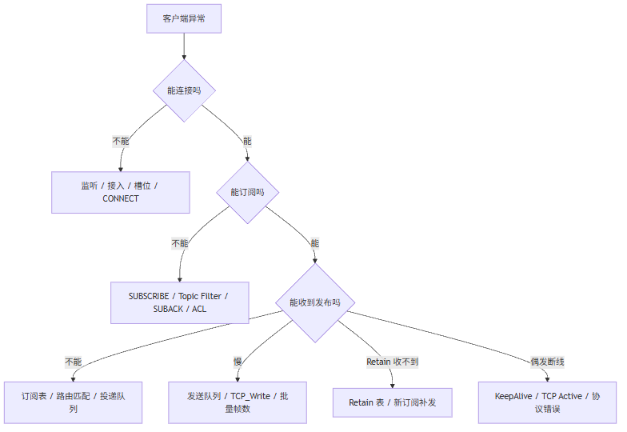

这一篇是主线收口，专门整理 PLC 侧 MQTT Broker 的现场排障路线。连不上先看监听和槽位，订阅失败先看 SUBACK 和订阅表，发布延迟先看队列和批量写出，Retain 收不到先看 Retain 表和订阅补发。
适合谁收藏
- 已经把 Broker 跑起来，但现场问题不断的人
- 需要给同事做 MQTT Broker 排障培训的人
- 想把 PLC 在线变量变成诊断体系的人
- 正在整理产品手册和技术支持文档的人
Broker 写出来以后，真正考验它的不是“演示能不能跑”。
真正考验是现场出了问题时：
你能不能在 5 分钟内判断问题在哪一层。
先给结论：
PLC Broker 排障不要先猜网络，也不要只看客户端日志。 正确方式是按层看：监听层、接入层、CONNECT 解析、订阅表、路由、发送队列、Retain 表、QoS 事务。
一、排障总图

这张图的核心是： 不要一上来就改代码。
先定位层级。
二、连不上怎么查
连不上先看这些变量：
| 变量 | 正常期望 | 异常含义 |
|---|---|---|
xRunning | TRUE | Broker 未进入运行态 |
hListenHandle | 非 0 | TCP 监听未建立 |
xTcpServerError | FALSE | 监听层错误 |
xTcpAcceptActive | 连接瞬间可能 TRUE | 有客户端尝试接入 |
uiAcceptFreeSlot | 非 0 | 有空闲槽位 |
uiActiveSlotCount | 随连接数变化 | 当前活跃客户端数 |
aSnapshots[x].xUsed | 连接后保持 TRUE | 槽位是否保住 |
如果这些值在连接过程中不断闪：
text
xTcpAcceptActive 闪
uiAcceptFreeSlot 闪
uiActiveSlotCount 闪优先看槽位释放前快照：
| 字段 | 判断 |
|---|---|
udiLastBytesRead = 0 | 可能首包还没到就释放 |
udiLastBytesRead > 0 | 已读到 MQTT 报文 |
xLastConnectParsed = FALSE | CONNECT 解析失败 |
eLastParseError | 解析失败原因 |
byLastConnectLevel | 协议级别读取结果 |
如果要在用户程序里做一个最小诊断观察，建议至少把 Broker 实例和快照暴露出来：
text
// 示例：在线监控时优先观察这些输出，而不是只盯客户端日志。
xBrokerRunning := fbBroker.xRunning;
xBrokerError := fbBroker.xError;
eBrokerError := fbBroker.eLastError;
uiActiveSlotCount := fbBroker.uiActiveSlotCount;
uiAcceptFreeSlot := fbBroker.uiAcceptFreeSlot;
stSlot1Snapshot := fbBroker.aSnapshots[1];三、CONNECT 失败怎么查
CONNECT 失败最有效的判断表：
| 现象 | 判断 |
|---|---|
udiLastBytesRead = 0 | TCP 接入有了，但 MQTT 首包未到 |
sLastProtocolName = MQTT 且 level 4 | MQTT 3.1.1 |
sLastProtocolName = MQTT 且 level 5 | MQTT 5.0 |
sLastProtocolName = MQIsdp 且 level 3 | MQTT 3.1 老协议 |
byLastConnectLevel = 100 | 协议级别偏移错误，读到字符 d |
| MQTT 5.0 连接后断开 | 看 CONNACK 是否返回零属性长度 |
经验结论：
TCP 已读到数据，就不要继续纠结“网线通不通”。 这时问题已经进入 MQTT 报文层。
四、订阅失败怎么查
订阅失败优先看：
| 变量 / 报文 | 作用 |
|---|---|
| SUBACK 返回码 | 客户端订阅是否被 Broker 接受 |
uiSubItemCount | 多 Topic 是否全部解析 |
| Topic Filter | 是否合法 |
| ACL 规则 | 是否被权限拒绝 |
| 订阅表 | 是否写入对应槽位 |
快速判断表：
| 现象 | 可能原因 |
|---|---|
| 客户端直接显示订阅失败 | SUBACK 返回 0x80 |
| 单 Topic 成功，多 Topic 丢项 | 解析循环不完整 |
device/#/status 失败 | # 位置非法 |
device/a+ 失败 | + 未独占层级 |
| 订阅成功但收不到 | 路由匹配或订阅表问题 |
五、发布收不到怎么查
发布成功但订阅端收不到，一般分三层：
排查表：
| 层级 | 看什么 |
|---|---|
| PUBLISH 解析 | Topic Name、Payload 长度、QoS |
| Router | F_MqttTopicMatch、订阅表 |
| 投递队列 | uiDeliveryQueueCount、队列满计数 |
| TCP 写出 | uiLastTxFrameCount、uiLastTxBytes |
| QoS ACK | TxInflight 状态 |
如果同一主题两个客户端互发，最好先用 QoS0 测通，再测 QoS1 / QoS2。
六、发布延迟怎么查
延迟问题不要靠感觉。
看这些字段：
| 字段 | 判断 |
|---|---|
uiDeliveryQueueCount 长期大于 0 | 发送出口跟不上 |
uiProtocolQueueCount 长期大于 0 | 协议响应被拖慢 |
uiLastTxFrameCount 长期为 1 | 批量写出没生效 |
uiLastTxFrameCount 常见 1~2 | 小消息批量程度有限，但可能够用 |
uiMaxDeliveryQueueCountSeen 很高 | 曾出现瞬时堆积 |
当前推荐默认：
text
cnMaxFramesPerConnectionScan = 8
cnMaxTxFramesPerWrite = 8
cnConnectFirstReadDelayMs = 20
cnConnectionInactiveGraceMs = 3000通信猫高频崩溃但 MQTTBox 正常时，不要盲目把 Broker 参数继续拉大。 这更像客户端工具承压。
七、Retain 收不到怎么查
Retain 验收必须用“新订阅”测。
| 步骤 | 期望 |
|---|---|
A 发布 CodeSys，Retain=1 | Broker Retain 表数量增加 |
B 重新订阅 CodeSys | B 立即收到保留消息 |
| A 发布空 Payload，Retain=1 | Broker 清除该 Topic Retain |
| B 再重新订阅 | 不应再收到旧 Retain |
排查变量：
| 变量 | 作用 |
|---|---|
uiRetainCount | 当前 Retain 数量 |
sLastRetainTopic | 最近 Retain 命中主题 |
uiLastRetainPayloadLen | 最近 Retain Payload 长度 |
| Retain 补发队列 | 新订阅是否触发补发 |
八、最常见的 8 个坑
| 坑 | 正确处理 |
|---|---|
| 以为多个客户端连 1883 是端口冲突 | 这是 Broker 正常模型 |
| 槽位一闪就释放就怀疑网络 | 先看首包等待和 Active 容忍 |
只支持 MQTT 协议名 | 还要兼容 MQIsdp |
| MQTT 5.0 CONNACK 少一个零属性长度 | 客户端可能直接断 |
| 订阅表只存字符串 | 必须绑定槽位和 QoS |
| PacketId 直接沿用发布者 | 转发给订阅者要重新分配 |
| Retain 只看发布成功 | 新订阅补发才是真验收 |
| 性能慢就盲目加队列 | 先看批量写帧数和写事务 |
排障结论分级
现场排障最忌讳一句话定罪。Broker 侧至少要把结论分成三类。
| 结论类型 | 可以怎么说 | 需要什么证据 |
|---|---|---|
| high | TCP 已读到 CONNECT，问题进入 MQTT 解析层 | udiLastBytesRead > 0，且有解析错误 |
| medium | 延迟大概率在发送出口 | 队列水位、uiLastTxFrameCount、客户端时间戳能对上 |
| low | 可能是某个客户端工具承压 | 只有客户端崩溃现象，没有 Broker 错误和抓包 |
Ben 式排障不是把话说满，而是把证据对象钉住。
如果只有客户端日志，没有 PLC 快照和抓包，那最多只能列第一怀疑组；如果 PLC 快照、Broker 诊断和客户端日志三边能对上，结论才可以往 high 提。
九、这一篇你最该记住的 6 句话
- Broker 排障要按层，不要先猜。
- 连不上先看监听、接入、槽位和 CONNECT。
- 订阅失败先看 SUBACK、Topic Filter 和订阅表。
- 发布收不到先看路由匹配和目标投递队列。
- 发布延迟先看
uiLastTxFrameCount和队列水位。 - Retain 是否实现，要用新订阅补发来验证。
下篇预告
主线 8 篇到这里结束。
下一篇是加更：
PLC Broker 要不要完整支持 MQTT 5.0？工业现场别被“新版本”带偏。
我会讲为什么当前轻量 Broker 选择 MQTT 5.0 基础兼容，而不是一上来做完整属性系统。
完整 ST 代码
下面这段来自 ST_MqttBrokerConnectionSnapshot.st。现场排障最怕只剩一个 xError，所以这里把 TCP、MQTT、队列、协议级别、最近帧、事务数量都做成快照量。
iecst
TYPE ST_MqttBrokerConnectionSnapshot :
STRUCT
xUsed : BOOL; // 当前槽位是否占用
xMqttConnected : BOOL; // 当前槽位是否完成 MQTT 会话建立
xDisconnectRequested : BOOL; // 当前槽位是否已经请求断开和清理
xTcpReadError : BOOL; // 当前槽位 TCP_Read 是否报错
xTcpWriteError : BOOL; // 当前槽位 TCP_Write 是否报错
xWriteBusy : BOOL; // 当前槽位是否正在等待 TCP_Write 完成
xWriteExecute : BOOL; // 当前槽位当前扫描周期是否触发 TCP_Write
xConnectionActive : BOOL; // 当前槽位对应的 NBS TCP_Connection 是否仍处于 Active 状态
xLastTcpReadError : BOOL; // 当前槽位生命周期内是否曾经捕获 TCP_Read 报错
uiSlot : UINT; // 当前槽位编号[1..cnMaxClientSlots]
uiTcpReadErrorCount : UINT; // 当前槽位连续 TCP_Read 错误次数，达到阈值才释放连接
byProtocolLevel : BYTE; // 当前会话实际使用的 MQTT 协议级别，3 表示 3.1，4 表示 3.1.1，5 表示 5.0 基础兼容模式
uiKeepAlive : UINT; // 客户端声明或 Broker 默认的 KeepAlive 周期[s]
udiLastActivityMs : ULINT; // 最近一次收到 MQTT 控制报文的系统时间戳[ms]
udiLastTcpActiveMs : ULINT; // 最近一次监听层确认 TCP_Connection 仍 Active 的系统时间戳[ms]
udiLastBytesRead : UDINT; // 当前槽位最近一次 TCP_Read 读到的字节数[byte]
udiLastNonZeroBytesRead : UDINT; // 当前槽位生命周期内最近一次非零 TCP_Read 字节数[byte]
hConnection : NBS.CAA.HANDLE; // 当前槽位绑定的 TCP 连接句柄，0 表示槽位没有有效连接
uiRxLength : UINT; // 当前槽位接收缓冲区已缓存字节数[byte]
uiTxLength : UINT; // 当前槽位发送缓冲区待发送字节数[byte]
uiLastTxFrameCount : UINT; // 当前槽位最近一次 TCP_Write 实际合并写出的 MQTT 帧数量[帧]
uiLastTxBytes : UINT; // 当前槽位最近一次 TCP_Write 实际写出的总字节数[byte]
udiTxBatchCount : UDINT; // 当前槽位累计启动 TCP 批量写出的次数[次]
udiTxFrameCount : UDINT; // 当前槽位累计写出的 MQTT 帧数量[帧]
uiMaxDeliveryQueueCountSeen : UINT; // 当前槽位生命周期内普通投递队列最高水位[条]
uiMaxProtocolQueueCountSeen : UINT; // 当前槽位生命周期内协议优先队列最高水位[条]
udiTxQueueFullDropped : UDINT; // 当前槽位因队列高水位或队列满而丢弃的 QoS0 投递数量[条]
uiLastFrameLen : UINT; // 当前槽位最近一次识别到的 MQTT 完整帧长度[byte]
byLastPacketType : BYTE; // 当前槽位最近一次处理的 MQTT 控制报文类型高 4 位，例如 16#10 表示 CONNECT
byLastConnectLevel : BYTE; // 当前槽位最近一次 CONNECT 协议级别字节，3 表示 3.1，4 表示 3.1.1，5 表示 5.0 基础兼容模式
xLastConnectParsed : BOOL; // 当前槽位最近一次 CONNECT 是否已经成功解析并进入会话建立流程
uiProtocolQueueCount : UINT; // 协议优先队列占用数量
uiDeliveryQueueCount : UINT; // 普通投递队列占用数量
uiRxInflightCount : UINT; // 当前连接关联的入站 QoS>0 事务数量
uiTxInflightCount : UINT; // 当前连接关联的出站 QoS>0 事务数量
eState : E_MqttConnectionState; // 当前连接状态机状态
eLastError : E_MqttBrokerError; // 当前连接最近错误码
eLastParseError : E_MqttBrokerError; // 当前槽位最近一次 MQTT 报文解析失败原因，uiNoError 表示最近解析未失败
eTcpReadErrorID : NBS.ERROR; // 当前槽位 TCP_Read 原始错误码
eLastTcpReadErrorID : NBS.ERROR; // 当前槽位生命周期内最近一次 TCP_Read 报错原始错误码，避免禁用读 FB 后被清零
eTcpWriteErrorID : NBS.ERROR; // 当前槽位 TCP_Write 原始错误码
sClientId : STRING(GVL_MqttBroker.cnMaxClientIdLen); // 当前连接 ClientID
sUsername : STRING(GVL_MqttBroker.cnMaxUsernameLen); // 当前连接认证用户名
END_STRUCT
END_TYPE诊断历史采用固定 ring buffer，不依赖文件系统，也不引入动态内存；这比“出错就看最后一个错误码”更适合 PLC 现场。
iecst
/// =======================================================================
/// 名称 : M_LogDiag
/// 功能 : 写入 Broker 诊断环形历史
/// 说明 : 所有关键异常和维护动作写入固定 ring buffer，避免动态内存和日志文件依赖。
/// 编程人员 : ControlRookie
/// 时间 : 2026-05-08
/// 版本 : V1.0
/// =======================================================================
{attribute 'hide_all_locals'}
METHOD M_LogDiag : BOOL
VAR_INPUT
uiSlot : UINT; // 事件关联客户端槽位，0 表示 Broker 顶层事件[1..cnMaxClientSlots]
eError : E_MqttBrokerError; // 事件关联错误码或状态码
sMessage : STRING; // 面向现场工程师的简短中文诊断文本
END_VAR
// === IMPLEMENTATION ===
IF (uiDiagWriteIndex < 1) OR (uiDiagWriteIndex > GVL_MqttBroker.cnDiagHistorySize) THEN
uiDiagWriteIndex := 1;
END_IF
aDiagHistory[uiDiagWriteIndex].xUsed := TRUE;
aDiagHistory[uiDiagWriteIndex].uiSlot := uiSlot;
aDiagHistory[uiDiagWriteIndex].eError := eError;
aDiagHistory[uiDiagWriteIndex].udiTimeMs := udiNowMs;
aDiagHistory[uiDiagWriteIndex].sMessage := sMessage;
IF uiDiagHistoryCount < GVL_MqttBroker.cnDiagHistorySize THEN
uiDiagHistoryCount := uiDiagHistoryCount + 1;
END_IF
uiDiagWriteIndex := uiDiagWriteIndex + 1;
IF uiDiagWriteIndex > GVL_MqttBroker.cnDiagHistorySize THEN
uiDiagWriteIndex := 1;
END_IF
M_LogDiag := TRUE;系列导航
- 系列定位：第 8 篇
- 上一篇：为什么 PLC Broker 会有延迟？从 TCP_Write 一帧一写到批量粘包写出
- 下一篇：加更 1：PLC Broker 要不要完整支持 MQTT 5.0？
评论区预留
这里先保留评论和回复结构，不接入第三方服务。后续统一决定登录、匿名、审核、反垃圾和静态站兼容策略。